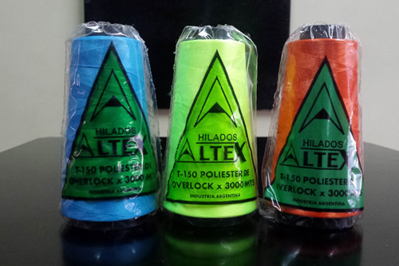
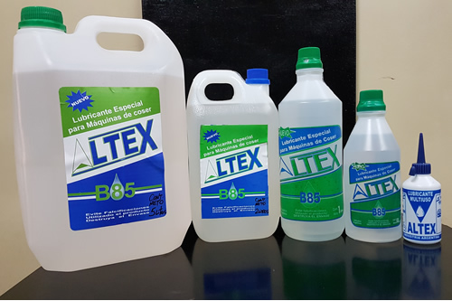

QUIÉNES SOMOS
Hilados Altex es una fábrica de hilos y afines para la confección de ropa, calzado y marroquinería.
Contamos con 27 años de experiencia en el mercado, cumpliendo con las necesidades de nuestros clientes con respecto a calidad y variedad de nuestros productos.
 |
 |
|
MISIÓN |
VISIÓN |
VALORES |
Refleja nuestro proposito personal, ofreciendo productos de excelencia, para cumplir de esta forma con las expectativas de nuestros clientes. |
Se trata de nuestra aspiracion, capacitandonos para interpretar las necesidades de nuestros clientes. En hilados altex tenemos la visión de llegar a ser la distribuidora de hilados y afines referente dentro del mercado de nuestro país. |
Son nuestros pilares, que funcionan como medios para el correcto cumplimiento de nuestra visión. Nuestros valores son: espíritu de servicio, visión de futuro, respeto, integridad y excelencia. |
HISTORIA
El 30 de marzo de 1990 nace Hilados Altex como un emprendimiento pequeño y familiar dedicado a la distribución de hilos y afines para la confección de ropa, calzado y marroquinería.
Desde nuestra apertura, contamos con objetivos y necesidades muy claras, los cuales eran abastecer un mercado puntualmente exigente con materiales nobles, duraderos y naturales. Esto trajo aparejado una necesidad de perfeccionamiento y evolución constante, que quedo plasmado a partir de septiembre de 1990, cuando comenzamos con la fabricación de hilo poliéster para overlock, y a los pocos meses con el comienzo del proceso del algodón para la recta industrial.
A través de estos 27 años de trayectoria, Hilados Altex demostró con los hechos que los valores y objetivos que dieron a su creación siguen siendo su motor, que día a día ponen en funcionamiento nuestras instalaciones.
ARTÍCULOS
Poseemos una amplia variedad de artículos, entre los cuales se encuentran los siguientes:
Poliester 150/48 texturizado
Hilo para overlock o collareta. La carta de colores cuenta con mas de 100 colores distintos con stock permanente.
Streech 70/20/2
Hilo para confeccionar prendas de lenceria, corseteria, calzas y todo tipo de tela de lycra, overlock, collareta. Contamos con una carta de 40 colores.
Fibra cortada 40/2 n°120
Hilo de coser 40/2 x 4000mts para todo tipo de costuras, camisas, remeras y buzos. Mas de 200 colores en carta.
Hilo de Jean
Titulo 75, 24/2 y 20/3. Hilo de costuras a la vista, jeans, camperas.
Poliester alta tenacidad
Poliester de fibra continua en diferentes titulos. 20x2000 de 420Dtex, 40x4000 de 240Dtex, 40x2000 de 240Dtex, 60x6000 de 240Dtex y 60x3000 de 240Dtex. Hilo para confeccion de calzados, lonas, carteras, mochilas, pelotas, inflables, tapiceria, marroquineria.
Algodon crudo para teñir/lienzo
Hilo crudo sin mercerizar para confeccion de prendas crudas y luego teñirlas cosidas al color deseado. Entre los titulos se encuentran el Algodon 30/2 xkg en tortas de 800gr overlock. Algodon 30/2 por unidad en conos de 5000mts (fino). Algodon 24/3 por unidad, conos de 4000mts (grueso).
Aceites industriales inmanchables
Lubricantes para todo tipo de maquinas de coser familiares e industriales. Tenemos en diferentes medidas de envases: 5lts, 2 lts, 1 lt, 1/2 lt, 100 cm3 familiar
Silicona pura
Lubricante para siliconar el hilado x1/2 lt y 100 cm3.
IMÁGENES
- 
- 
-

-

-

CÓMO LLEGAR
Berduc 2044, Hurlingham
Tel/fax: 4665-7362 / 5434-8523
Lunes a viernes de 9 a 16hs
CONTACTO
alcristex@hotmail.com
hiladosaltex@hotmail.com
Tel/fax: 4665-7362 / 5434-8523